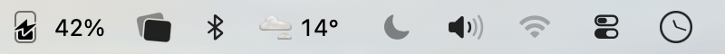
Your browsers’ recent tabs
together, from anywhere
Hold ⌥ and tap Tab in any app to switch tabs across your connected browsers
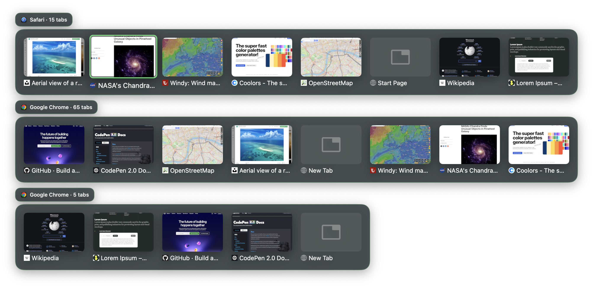
Hold ⌃ and tap Tab for your recent tabs, with live previews
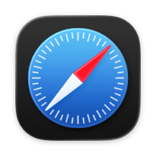
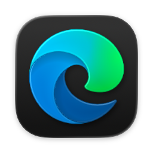
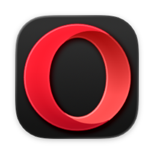
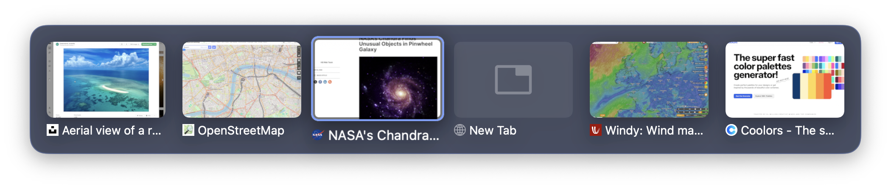

Hold ⌥ and tap Tab in any app to switch tabs across your connected browsers

See unread messages in Gmail, WhatsApp, Teams, LinkedIn and more,
or the tab playing music, and jump straight to it
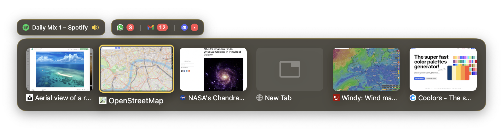
More tabs at a glance, and one click to close the ones you're done with
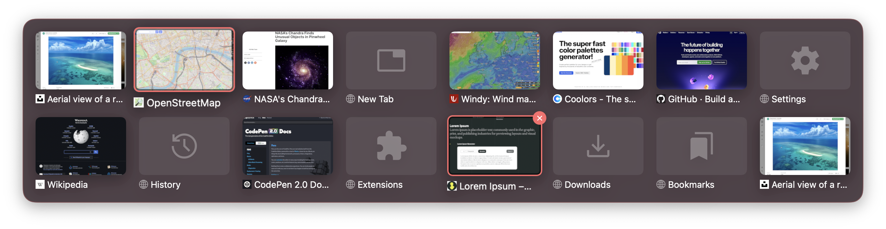
Pick your shortcuts, accent color and how many tabs to show, all from the menu bar
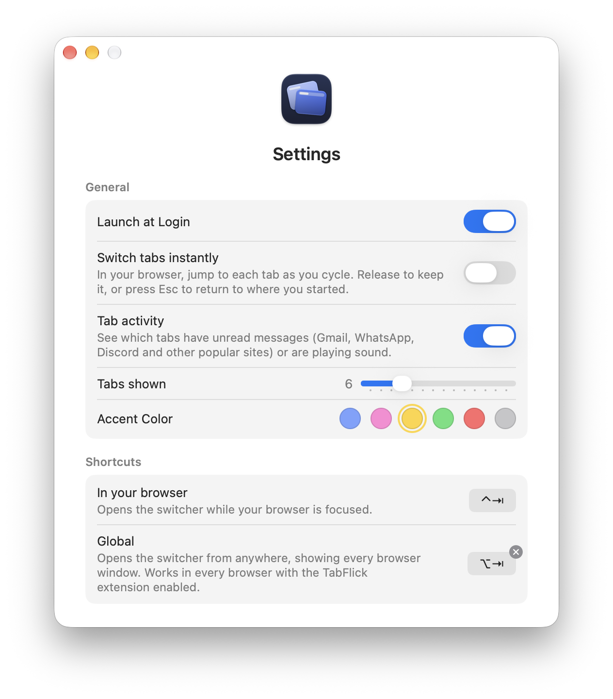
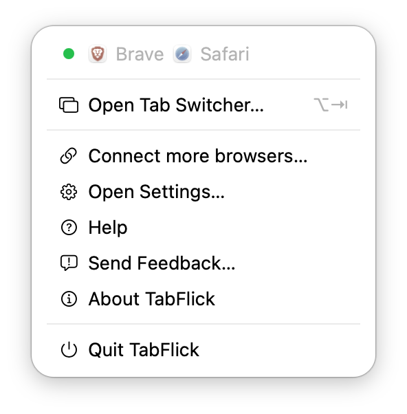
Connect Chrome, Safari, Firefox,
Edge, Brave or Opera
with an extension, in a few clicks
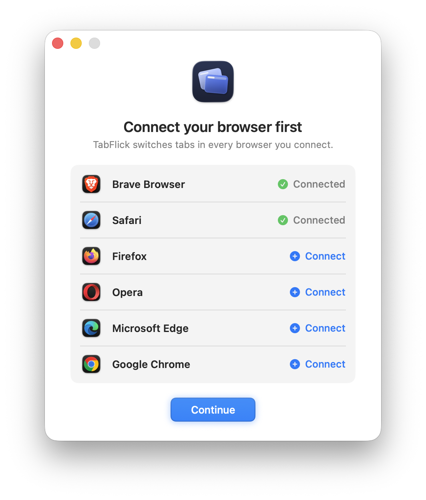